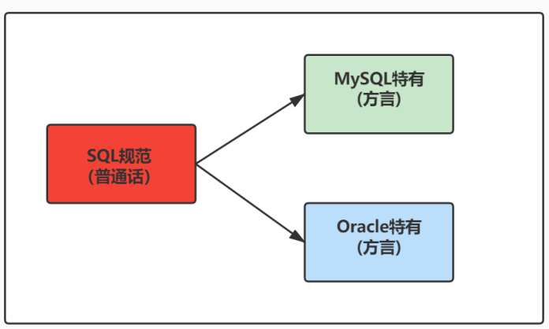
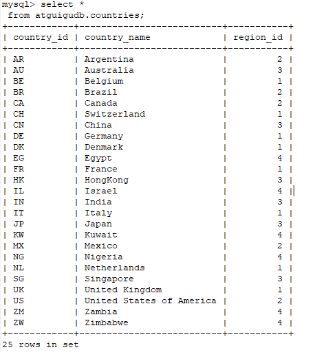
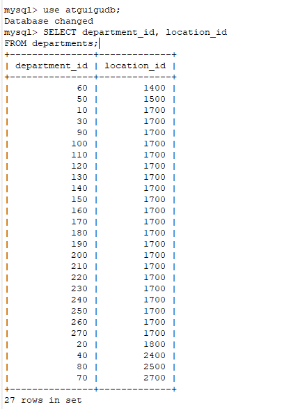
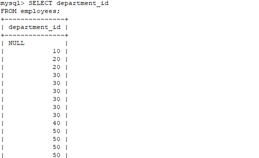
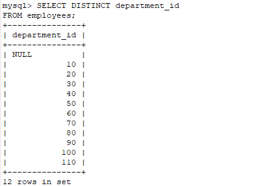
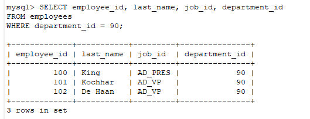

1. SQL概述
1.1 SQL背景知识
1946 年，世界上第一台电脑诞生，如今，借由这台电脑发展起来的互联网已经自成江湖。在这几十 年里，无数的技术、产业在这片江湖里沉浮，有的方兴未艾，有的已经几幕兴衰。但在这片浩荡的 波动里，有一门技术从未消失，甚至“老当益壮”，那就是 SQL。
45 年前，也就是 1974 年，IBM 研究员发布了一篇揭开数据库技术的论文《SEQUEL：一门结构 化的英语查询语言》，直到今天这门结构化的查询语言并没有太大的变化，相比于其他语 言， SQL 的半衰期可以说是非常长 了。
不论是前端工程师，还是后端算法工程师，都一定会和数据打交道，都需要了解如何又快又准确地 提取自己想要的数据。更别提数据分析师了，他们的工作就是和数据打交道，整理不同的报告，以 便指导业务决策。
SQL（Structured Query Language，结构化查询语言）是使用关系模型的数据库应用语言， 与数据直 接打交道 ，由 IBM 上世纪70年代开发出来。后由美国国家标准局（ANSI）开始着手制定SQL标准， 先后有 SQL-86 ， SQL-89 ， SQL-92 ， SQL-99 等标准。
SQL 有两个重要的标准，分别是 SQL92 和 SQL99，它们分别代表了 92 年和 99 年颁布的 SQL 标 准，我们今天使用的 SQL 语言依然遵循这些标准。
不同的数据库生产厂商都支持SQL语句，但都有特有内容。

1.2 SQL 分类
SQL语言在功能上主要分为如下3大类：
DDL（Data Definition Languages、数据定义语言），这些语句定义了不同的数据库、表、视图、索 引等数据库对象，还可以用来创建、删除、修改数据库和数据表的结构。
主要的语句关键字包括 CREATE 、 DROP 、 ALTER 等
DML（Data Manipulation Language、数据操作语言），用于添加、删除、更新和查询数据库记 录，并检查数据完整性。
` 主要的语句关键字包括 INSERT 、 DELETE 、 UPDATE 、 SELECT 等`。【SELECT是SQL语言的基础，最为重要】
DCL（Data Control Language、数据控制语言），用于定义数据库、表、字段、用户的访问权限和 安全级别。
主要的语句关键字包括 GRANT 、 REVOKE 、 COMMIT 、 ROLLBACK 、 SAVEPOINT 等
2. SQL语言的规则与规范
2.1 基本规则
- SQL 可以写在一行或者多行。为了提高可读性，各子句分行写，必要时使用缩进
- 每条命令以
;或\g或\G结束 - 关键字不能被缩写也不能分行
- 关于标点符号 必须保证所有的
()、单引号、双引号是成对结束的 - 必须使用英文状态下的半角输入方式
- 字符串型和日期时间类型的数据可以使用单引号（’ ‘）表示
- 列的别名，尽量使用双引号（” “），而且不建议省略as
- 关于标点符号 必须保证所有的
2.2 SQL大小写规范 （建议遵守）
MySQL 在 Windows 环境下是大小写不敏感的
- **MySQL 在 Linux 环境下是大小写敏感的 **
- 数据库名、表名、表的别名、变量名是严格区分大小写的
- 关键字、函数名、列名(或字段名)、列的别名(字段的别名) 是忽略大小写的。
- 推荐采用统一的书写规范：
- 数据库名、表名、表别名、字段名、字段别名等都小写
- SQL 关键字、函数名、绑定变量等都大写
2.3 注 释
可以使用如下格式的注释结构
单行注释：#注释文字(MySQL特有的方式)
单行注释：-- 注释文字(--后面必须包含一个空格。)
多行注释：/* 注释文字 */
2.4 命名规则（暂时了解）
- 数据库、表名不得超过30个字符，变量名限制为29个
- 必须只能包含
A–Z, a–z, 0–9, _共63个字符 - 数据库名、表名、字段名等对象名中间不要包含空格
- 同一个MySQL软件中，数据库不能同名；同一个库中，表不能重名；同一个表中，字段不能重名
- 必须保证你的字段没有和保留字、数据库系统或常用方法冲突。如果坚持使用，请在SQL语句中使 用`（着重号）引起来
- 保持字段名和类型的一致性，在命名字段并为其指定数据类型的时候一定要保证一致性。假如数据 类型在一个表里是整数，那在另一个表里可就别变成字符型了
2.5 数据导入指令
在命令行客户端登录mysql，使用source指令导入
mysql> source d:\mysqldb.sql
mysql> desc employees;
+----------------+-------------+------+-----+---------+-------+
| Field | Type | Null | Key | Default | Extra |
+----------------+-------------+------+-----+---------+-------+
| employee_id | int(6) | NO | PRI | 0 | |
| first_name | varchar(20) | YES | | NULL | |
| last_name | varchar(25) | NO | | NULL | |
| email | varchar(25) | NO | UNI | NULL | |
| phone_number | varchar(20) | YES | | NULL | |
| hire_date | date | NO | | NULL | |
| job_id | varchar(10) | NO | MUL | NULL | |
| salary | double(8,2) | YES | | NULL | |
| commission_pct | double(2,2) | YES | | NULL | |
| manager_id | int(6) | YES | MUL | NULL | |
| department_id | int(4) | YES | MUL | NULL | |
+----------------+-------------+------+-----+---------+-------+
11 rows in set (0.00 sec)
3.基本的SELECT语句
3.0 SELECT…
SELECT 1; #没有任何子句
SELECT 9/2; #没有任何子句
3.1 SELECT … FROM
SELECT 标识选择哪些列
FROM 标识从哪个表中选择
选择全部列：
SELECT 标识选择哪些列
FROM 标识从哪个表中选择

一般情况下，除非需要使用表中所有的字段数据，最好不要使用通配符‘*’。使用通配符虽然可以节 省输入查询语句的时间，但是获取不需要的列数据通常会降低查询和所使用的应用程序的效率。
通配符的优势是，当不知道所需要的列的名称时，可以通过它获取它们。
在生产环境下，不推荐你直接使用 SELECT * 进行查询。
选择特定的列：
SELECT department_id, location_id
FROM departments;

MySQL中的SQL语句是不区分大小写的，因此SELECT和select的作用是相同的。但是，许多开发人 员习惯将关键字大写、数据列和表名小写，读者也应该养成一个良好的编程习惯，这样写出来的代码更容易阅读和维护。
3.2 列的别名
- 重命名一个列
- 便于计算
- 紧跟列名，也可以在列名和别名之间加入关键字AS，别名使用双引号，以便在别名中包含空格或特 殊的字符并区分大小写。
- AS 可以省略
- 建议别名简短，见名知意
举例
SELECT last_name AS name, commission_pct comm
FROM employees;

3.3 去除重复行
默认情况下，查询会返回全部行，包括重复行。
SELECT department_id
FROM employees;

107 rows in set
在SELECT语句中使用关键字DISTINCT去除重复行
SELECT DISTINCT department_id
FROM employees;

这里有两点需要注意：
- DISTINCT 需要放到所有列名的前面。如果写成
SELECT salary, DISTINCT department_id FROM employees会报错。 - DISTINCT 其实是对后面所有列名的组合进行去重，你能看到最后的结果是 74 条，因为这 74 个部 门id不同，都有 salary 这个属性值。如果你想要看都有哪些不同的部门（department_id），只需要写
DISTINCT department_id即可，后面不需要再加其他的列名了。
3.4 空值参与运算
所有运算符或列值遇到null值，运算的结果都为null
SELECT employee_id,salary,commission_pct,
12 * salary * (1 + commission_pct) "annual_sal"
FROM employees;
这里你一定要注意，在 MySQL 里面， 空值不等于空字符串。
一个空字符串的长度是 0，而一个空值的长度是空。而且，在 MySQL 里面，空值是占用空间的。
3.5 着重号
错误的
mysql> SELECT * FROM ORDER;
ERROR 1064 (42000): You have an error in your SQL syntax; check the manual that
corresponds to your MySQL server version for the right syntax to use near 'ORDER' at
line 1
正确的
mysql> SELECT * FROM `ORDER`;
+----------+------------+
| order_id | order_name |
+----------+------------+
| 1 | shkstart |
| 2 | tomcat |
| 3 | dubbo |
+----------+------------+
3 rows in set (0.00 sec)
mysql> SELECT * FROM `order`;
+----------+------------+
| order_id | order_name |
+----------+------------+
| 1 | shkstart |
| 2 | tomcat |
| 3 | dubbo |
+----------+------------+
3 rows in set (0.00 sec)
结论: 我们需要保证表中的字段、表名等没有和保留字、数据库系统或常用方法冲突。如果真的相同，请在 SQL语句中使用一对``（着重号）引起来。
3.6 查询常数
SELECT 查询还可以对常数进行查询。对的，就是在 SELECT 查询结果中增加一列固定的常数列。这列的 取值是我们指定的，而不是从数据表中动态取出的。 你可能会问为什么我们还要对常数进行查询呢？
SQL 中的 SELECT 语法的确提供了这个功能，一般来说我们只从一个表中查询数据，通常不需要增加一个 固定的常数列，但如果我们想整合不同的数据源，用常数列作为这个表的标记，就需要查询常数。 比如说，我们想对 employees 数据表中的员工姓名进行查询，同时增加一列字段 corporation ，这个 字段固定值为“尚硅谷”，可以这样写：
SELECT '尚硅谷' as corporation, last_name FROM employees;
4. 显示表结构
使用DESCRIBE 或 DESC 命令，表示表结构。
DESCRIBE employees;
或
DESC employees;
mysql> desc employees;
+----------------+-------------+------+-----+---------+-------+
| Field | Type | Null | Key | Default | Extra |
+----------------+-------------+------+-----+---------+-------+
| employee_id | int(6) | NO | PRI | 0 | |
| first_name | varchar(20) | YES | | NULL | |
| last_name | varchar(25) | NO | | NULL | |
| email | varchar(25) | NO | UNI | NULL | |
| phone_number | varchar(20) | YES | | NULL | |
| hire_date | date | NO | | NULL | |
| job_id | varchar(10) | NO | MUL | NULL | |
| salary | double(8,2) | YES | | NULL | |
| commission_pct | double(2,2) | YES | | NULL | |
| manager_id | int(6) | YES | MUL | NULL | |
| department_id | int(4) | YES | MUL | NULL | |
+----------------+-------------+------+-----+---------+-------+
11 rows in set (0.00 sec)
其中，各个字段的含义分别解释如下：
- Field：表示字段名称。
- Type：表示字段类型，这里 barcode、goodsname 是文本型的，price 是整数类型的。
- Null：表示该列是否可以存储NULL值。
- Key：表示该列是否已编制索引。PRI表示该列是表主键的一部分；UNI表示该列是UNIQUE索引的一 部分；MUL表示在列中某个给定值允许出现多次。
- Default：表示该列是否有默认值，如果有，那么值是多少。
- Extra：表示可以获取的与给定列有关的附加信息，例如AUTO_INCREMENT等。
5. 过滤数据
SELECT 字段1,字段2
FROM 表名
WHERE 过滤条件
举例
SELECT employee_id, last_name, job_id, department_id
FROM employees
WHERE department_id = 90

6. 习题
1.查询员工12个月工资的总和，并起别名为ANNUAL SALARY
SELECT employee_id, last_name,salary*12*(1+IFNULL(commission_pct,0)) "ANNUAL SALARY"
FROM employees;
2.查询employee表中去除重复的job_id以后的数据
SELECT DISTINCT job_id
FROM employees;
3.查询工资大于12000的员工姓名和工资
SELECT last_name,salary
FROM employees
WHERE salary >12000;
4.查询员工号为176的员工姓名和部门号
SELECT last_name,department_id
FROM employees
WHERE employee_id =176;
5.显示表department的结构，并查询其中的全部数据
DESC departments;
SELECT * FROM departments;